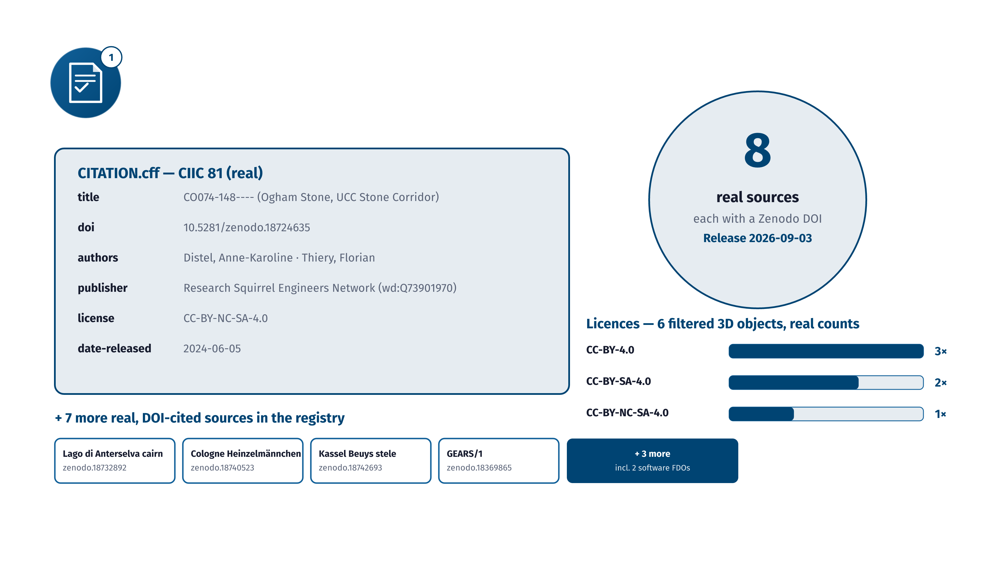
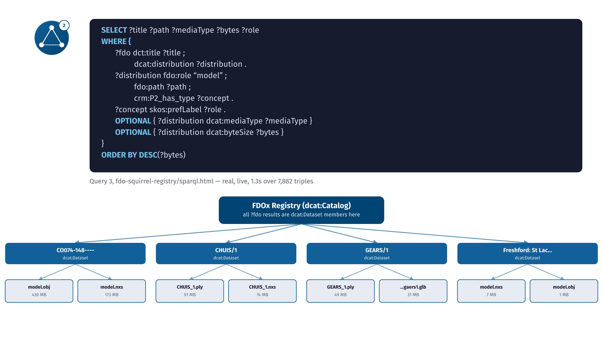
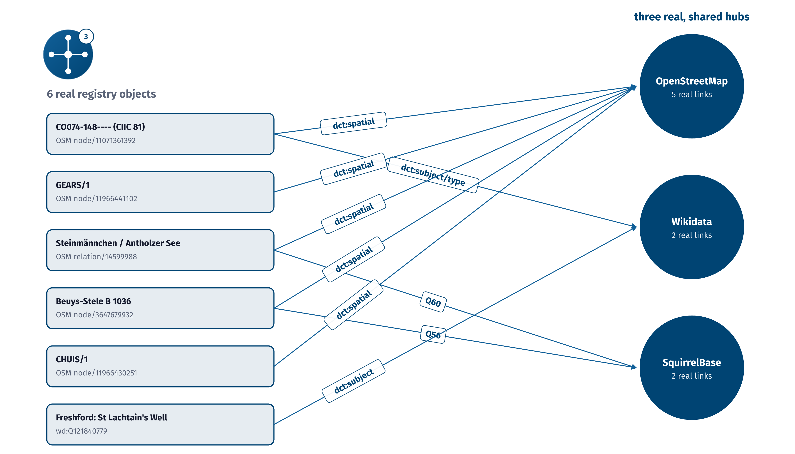
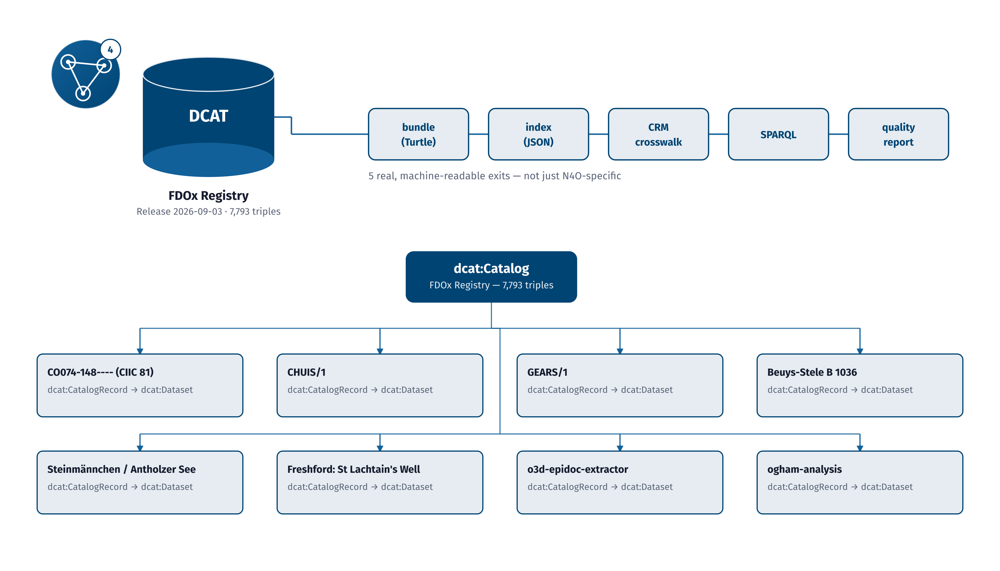

Talk slides: the purpose
One slide for each of the four purposes.

TU.1Talk slide, outcome 1: FAIR and citable, shown with the real CITATION.cff of CIIC 81.
FDOx-squirrel, fdox-visuals (Florian Thiery, LEIZA). Code: MIT licence.



TU.2Talk slide, outcome 2: semantically queryable, shown with a real query on the registry’s SPARQL page.
FDOx-squirrel, fdox-visuals (Florian Thiery, LEIZA). Code: MIT licence.



TU.3Talk slide, outcome 3: interoperable. Six real registry objects share three real hubs.
FDOx-squirrel, fdox-visuals (Florian Thiery, LEIZA). Code: MIT licence.



TU.4Talk slide, outcome 4: integrable. Bundles in Turtle and JSON enter the registry through a crosswalk.
FDOx-squirrel, fdox-visuals (Florian Thiery, LEIZA). Code: MIT licence.